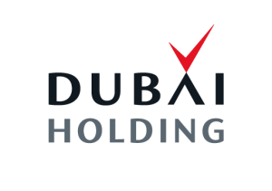
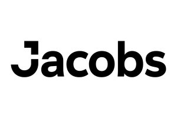
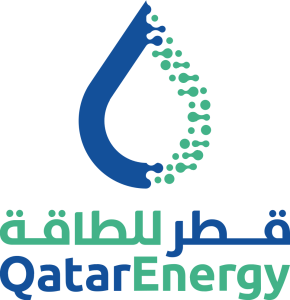
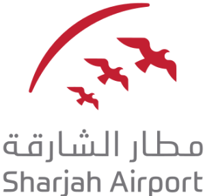
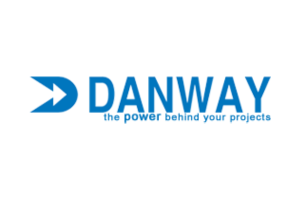
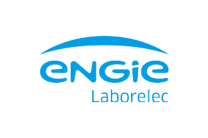

Dubai, UAE
Trillionaire Residences
Condition Assessment · Repair Design
01Middle East references
Selected projects spanning residential towers, commercial buildings and critical infrastructure.
Condition Assessment · Repair Design
01Corrosion Investigation · Rehabilitation
02Forensic Investigation · Structural Analysis
03Structural Assessment · Strengthening Design
04Durability Engineering · Marine Environment
05Repair Design · QA/QC Supervision
06Durability Planning · New Structure
07Thermographic Inspection · Condition Assessment
08Structural Assessment · PT System Investigation
09Durability Assessment · Service Life Modelling
10





Put our expertise to work